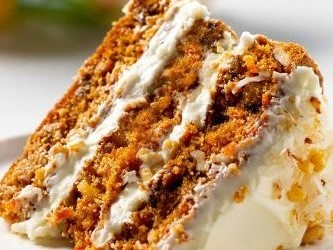
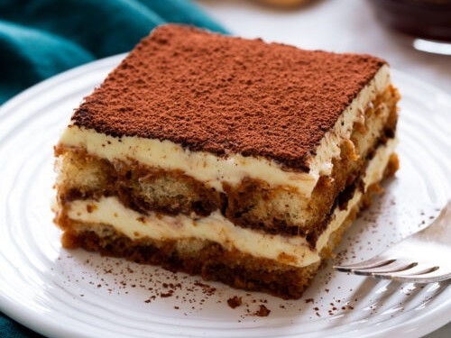
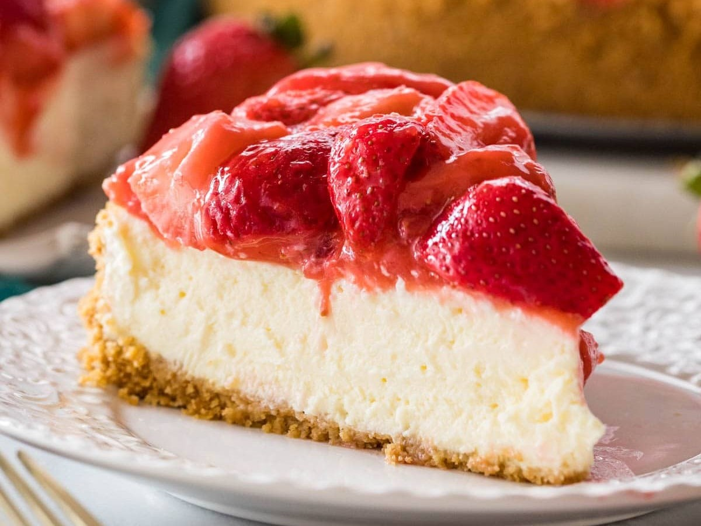

Recepten

Carrot Cake
Deze cake wordt bereid met geraspte wortels, die een natuurlijke zoetheid en een zachte consistentie aan het gebak geven. De toevoeging van specerijen zoals kaneel en nootmuskaat versterkt de diepte van de smaak.

Tiramisu
Dit heerlijke dessert combineert lagen van luchtige mascarponekaas, doordrenkt met koffie en cacoapoeder, met in koffie gedrenkte lange vingers, die een zachte, sponzige textuur krijgen.

Tiramisu
"Cheesecake" is een populair dessert dat zich ondescheidt door zijn fluweelzachte textuur en rijke, romige smaak. Het belangrijkste kenmerk van cheesecake is de romige vulling die is gemaakt van roomkaas, eieren en suiker, vaak op smaak gebracht met vanille-extract.